百事可樂的蘇聯海軍
AIVideo 故事板與成片預覽系統 · 自動生成於 20260930_百事可樂的蘇聯海軍
🎞️ 各場景分鏡與語音審查
001_scene_1 · 第 1 幕
🖼️ 畫中畫 PiP
時長: 18.43s

疊加參考圖 (PiP)：

002_scene_2 · 第 2 幕
時長: 9.69s

003_scene_3 · 第 3 幕
時長: 18.79s

004_scene_4 · 第 4 幕
時長: 12.96s

005_scene_5 · 第 5 幕
🖼️ 畫中畫 PiP
時長: 14.59s

疊加參考圖 (PiP)：
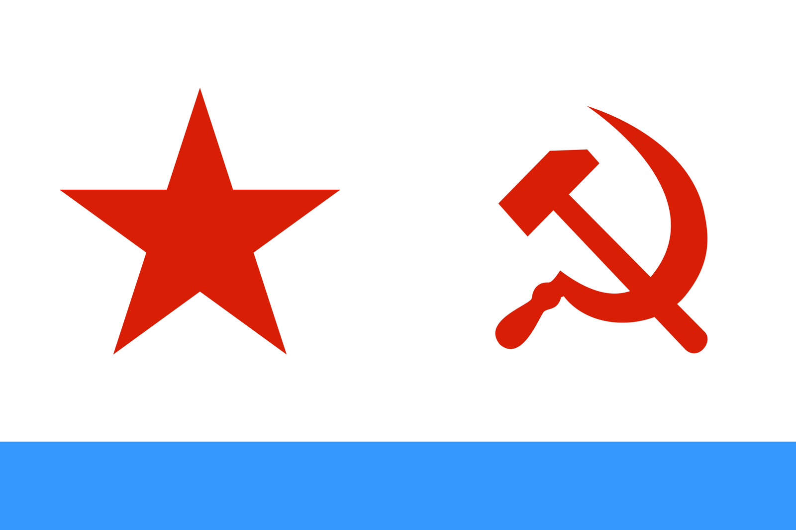
006_scene_6 · 第 6 幕
🖼️ 畫中畫 PiP
時長: 16.52s

疊加參考圖 (PiP)：
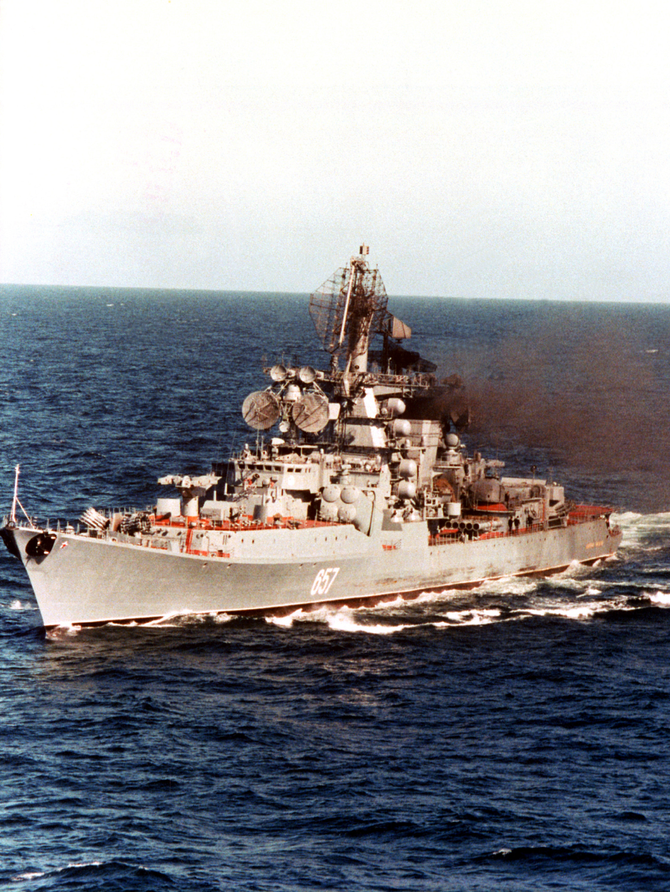
007_scene_7 · 第 7 幕
🖼️ 畫中畫 PiP
時長: 14.2s

疊加參考圖 (PiP)：

008_scene_8 · 第 8 幕
時長: 18.59s

009_scene_9 · 第 9 幕
🖼️ 畫中畫 PiP
時長: 9.96s
無畫面
疊加參考圖 (PiP)：
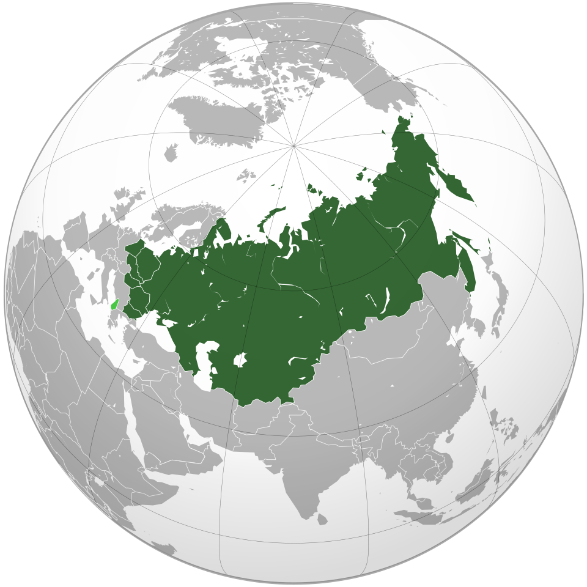
010_scene_10 · 第 10 幕
🖼️ 畫中畫 PiP
時長: 16.18s
無畫面
疊加參考圖 (PiP)：
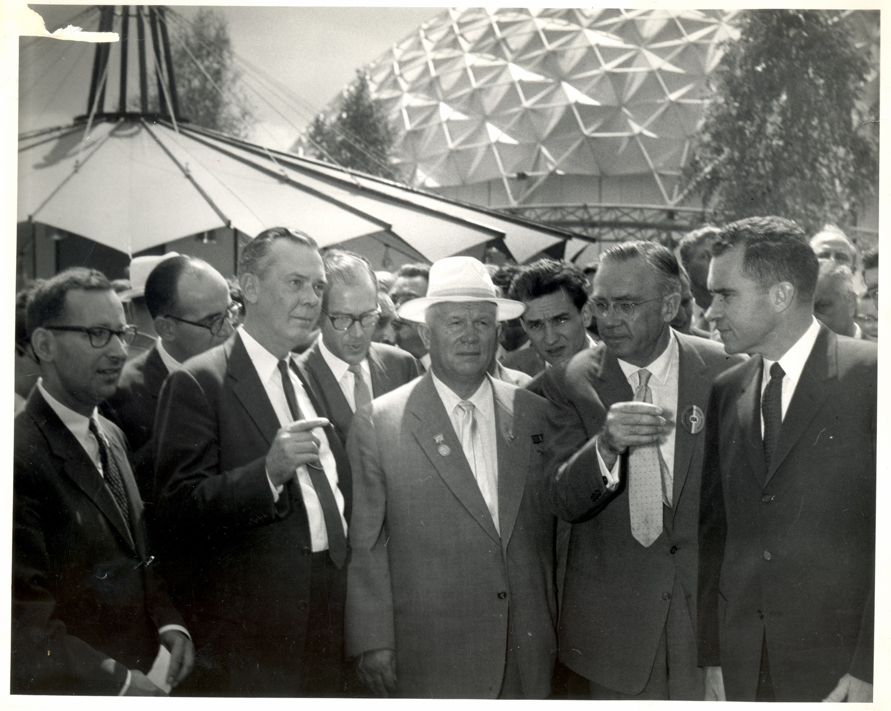
011_scene_11 · 第 11 幕
🖼️ 畫中畫 PiP
時長: 17.48s

疊加參考圖 (PiP)：
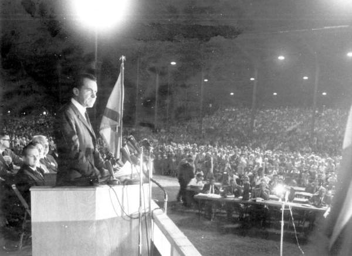
012_scene_12 · 第 12 幕
時長: 15.73s

013_scene_13 · 第 13 幕
🖼️ 畫中畫 PiP
時長: 17.39s
無畫面
疊加參考圖 (PiP)：

014_scene_14 · 第 14 幕
時長: 14.39s

015_scene_15 · 第 15 幕
時長: 8.76s

016_scene_16 · 第 16 幕
🖼️ 畫中畫 PiP
時長: 14.34s

疊加參考圖 (PiP)：
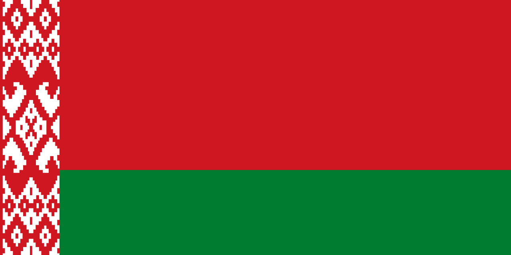
017_scene_17 · 第 17 幕
時長: 8.35s

018_scene_18 · 第 18 幕
時長: 20.81s

019_scene_19 · 第 19 幕
🖼️ 畫中畫 PiP
時長: 9.2s

疊加參考圖 (PiP)：
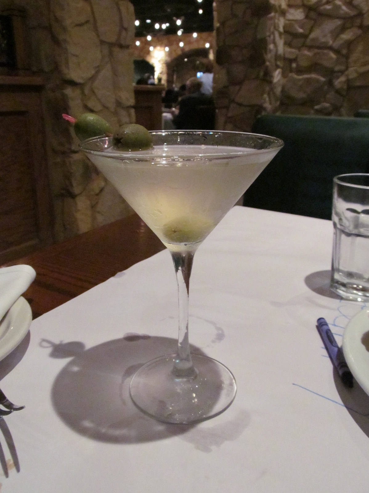
020_scene_20 · 第 20 幕
時長: 16.92s

021_scene_21 · 第 21 幕
時長: 14.36s

022_scene_22 · 第 22 幕
時長: 16.24s

023_scene_23 · 第 23 幕
時長: 15.92s

024_scene_24 · 第 24 幕
時長: 14.74s

025_scene_25 · 第 25 幕
時長: 14.76s

026_scene_26 · 第 26 幕
🖼️ 畫中畫 PiP
時長: 14.52s

疊加參考圖 (PiP)：
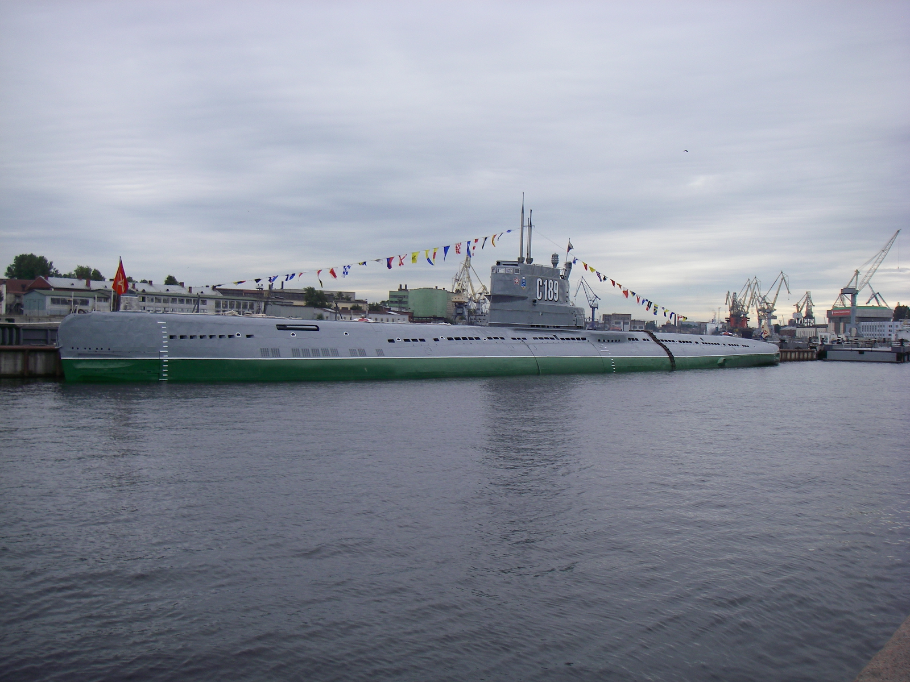
027_scene_27 · 第 27 幕
時長: 15.19s

028_scene_28 · 第 28 幕
時長: 8.36s

029_scene_29 · 第 29 幕
時長: 13.76s

030_scene_30 · 第 30 幕
時長: 11.57s

031_scene_31 · 第 31 幕
時長: 10.4s

032_scene_32 · 第 32 幕
時長: 8.12s

033_scene_33 · 第 33 幕
時長: 15.95s

034_scene_34 · 第 34 幕
時長: 10.42s

035_scene_35 · 第 35 幕
🖼️ 畫中畫 PiP
時長: 9.45s
無畫面
疊加參考圖 (PiP)：
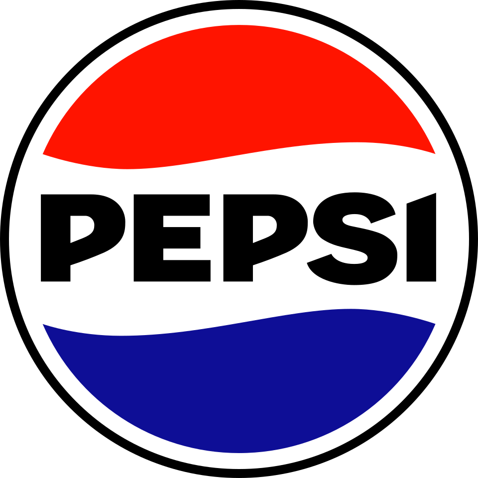
036_scene_36 · 第 36 幕
時長: 13.92s

037_scene_37 · 第 37 幕
時長: 11.8s

038_scene_38 · 第 38 幕
🖼️ 畫中畫 PiP
時長: 17.58s
無畫面
疊加參考圖 (PiP)：
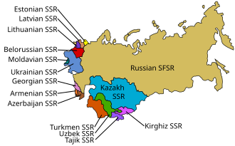
039_scene_39 · 第 39 幕
時長: 15.12s

040_scene_40 · 第 40 幕
時長: 14.57s

041_scene_41 · 第 41 幕
時長: 16.01s

042_scene_42 · 第 42 幕
時長: 13.92s

043_scene_43 · 第 43 幕
🖼️ 畫中畫 PiP
時長: 17.04s

疊加參考圖 (PiP)：
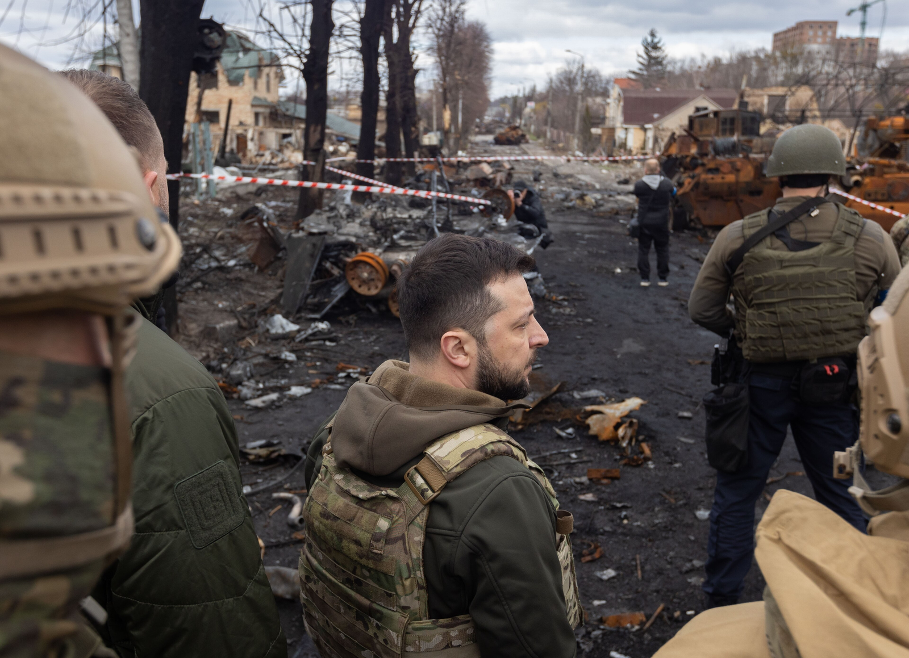
044_scene_44 · 第 44 幕
時長: 9.96s

045_scene_45 · 第 45 幕
🖼️ 畫中畫 PiP
時長: 9.93s

疊加參考圖 (PiP)：

046_scene_46 · 第 46 幕
時長: 9.92s

047_scene_47 · 第 47 幕
時長: 19.06s

048_scene_48 · 第 48 幕
時長: 17.09s

049_scene_49 · 第 49 幕
時長: 11.6s

050_scene_50 · 第 50 幕
時長: 17.59s

051_scene_51 · 第 51 幕
時長: 17.54s

052_scene_52 · 第 52 幕
時長: 10.8s

053_scene_53 · 第 53 幕
時長: 16.12s